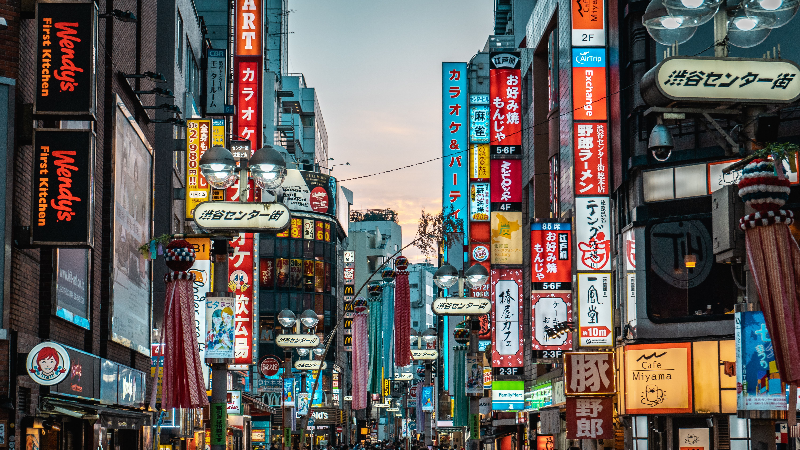

About Me

I was born and raised in sunny San Diego, California. I have an older brother who is two years older than me, and growing up with him has been a big part of my life. Whether we were competing in games or supporting each other, he has always been someone I can rely on. I am very close with my family, and they have always encouraged me to work hard and follow my interests. I also value my friendships a lot, and my friends are an important part of my life. One of my favorite places in San Diego is Mission Bay Beach, where I enjoy spending time outside with my family and relaxing near the water.
My Hobbies

My life is filled with a variety of creative and physical hobbies I have pursued for many years. For over a decade, I have expressed myself through dance, which keeps me active and allows me to express myself through movement. Alongside this, I have spent the last seven years playing table tennis, which has taught me strategy and focus. Music is also a major part of my life, as I have dedicated eleven years to playing the piano and two years to playing the flute, allowing me to explore my creativity through rhythm and melody. When I am not practicing, I often enjoy reading, which allows me to relax and explore new perspectives. Finally, I like to spend my quiet moments writing, using words to capture ideas and my personal experiences.
Favorite Place

One of my favorite places to visit with my family is Japan. I love exploring the busy streets of Tokyo, seeing colorful shops, and eating some of my favorite foods like sushi, ramen, and matcha desserts. I also remember visiting beautiful gardens, temples, and fun cafes with my family, as we walked around the neighborhoods and enjoyed all the sights that the city had to offer. Walking through the streets and trying new activities was both exciting and relaxing, and it gave me a chance to learn more about Japanese culture. Experiencing Tokyo and enjoying the foods and places I love make the trip memorable. To me, our trips to Japan are always unforgettable because it combines amazing food, fun activities, and quality time with my family.